Inside vLLM: Anatomy of a High-Throughput LLM Inference System
Note: Originally posted on Aleksa Gordic's website.
From paged attention, continuous batching, prefix caching, specdec, etc. to multi-GPU, multi-node dynamic serving at scale
In this post, I'll gradually introduce all of the core system components and advanced features that make up a modern high-throughput LLM inference system. In particular I'll be doing a breakdown of how vLLM [1] works.
This post is the first in a series. It starts broad and then layers in detail (following an inverse-pyramid approach) so you can form an accurate high-level mental model of the complete system without drowning in minutiae.
Later posts will dive into specific subsystems.
This post is structured into five parts:
- LLM engine & engine core: fundamentals of vLLM (scheduling, paged attention, continuous batching, etc.)
- Advanced features: chunked prefill, prefix caching, guided & speculative decoding, disaggregated P/D
- Scaling up: from single-GPU to multi-GPU execution
- Serving layer: distributed / concurrent web scaffolding
- Benchmarks and auto-tuning: measuring latency and throughput
Note: * Analysis is based on commit 42172ad (August 9th, 2025).
- Target audience: anyone curious about how state-of-the-art LLM engines work, as well as those interested in contributing to vLLM, SGLang, etc.
- I'll focus on the V1 engine. I also explored V0 (now deprecated), which was valuable for understanding how the project evolved, and many concepts still carry over.
- The first section on LLM Engine / Engine Core might be a bit overwhelming/dry - but the rest of the blog has plenty examples and visuals. :)
LLM Engine & Engine Core
The LLM engine is the fundamental building block of vLLM. On its own, it already enables high-throughput inference - but only in an offline setting. You can't serve it to customers over the web yet.
We'll use the following offline inference snippet as our running example (adapted from basic.py).
from vllm import LLM, SamplingParams
prompts = [
"Hello, my name is",
"The president of the United States is",
]
sampling_params = SamplingParams(temperature=0.8, top_p=0.95)
def main():
llm = LLM(model="TinyLlama/TinyLlama-1.1B-Chat-v1.0")
outputs = llm.generate(prompts, sampling_params)
if __name__ == "__main__":
main()Note: Environment vars:
- VLLM_USE_V1="1" # we're using engine V1
- VLLM_ENABLE_V1_MULTIPROCESSING="0" # we're running in a single process
This configuration is:
- offline (no web/distributed system scaffolding)
- synchronous (all execution happens in a single blocking process)
- single-GPU (no data/model/pipeline/expert parallelism; DP/TP/PP/EP = 1)
- using standard transformer [2] (supporting hybrid models like Jamba requires a more complex hybrid KV-cache memory allocator)
From here, we'll gradually build up to an online, async, multi-GPU, multi-node inference system - but still serving a standard transformer.
In this example we do two things, we:
- Instantiate an engine
- Call
generateon it to sample from the given prompts
Let's start analyzing the constructor.
LLM Engine constructor
The main components of the engine are:
- vLLM config (contains all of the knobs for configuring model, cache, parallelism, etc.)
- processor (turns raw inputs →
EngineCoreRequestsvia validation, tokenization, and processing) - engine core client (in our running example we're using
InprocClientwhich is basically ==EngineCore; we'll gradually build up toDPLBAsyncMPClientwhich allows serving at scale) - output processor (converts raw
EngineCoreOutputs→RequestOutputthat the user sees)
Note: With the V0 engine being deprecated, class names and details may shift. I'll emphasize the core ideas rather than exact signatures. I'll abstract away some but not all of those details.
Engine core itself is made up of several sub components:
- Model Executor (drives forward passes on the model, we're currently
dealing with
UniProcExecutorwhich has a singleWorkerprocess on a single GPU). We'll gradually build up toMultiProcExecutorwhich supports multiple GPUs - Structured Output Manager (used for guided decoding - we'll cover this later)
- Scheduler (decides which requests go into the next engine step) - it
further contains:
- policy setting - it can be either FCFS (first come first served) or priority (higher priority requests are served first)
waitingandrunningqueues- KV cache manager - the heart of paged attention [3]
The KV-cache manager maintains a free_block_queue
- a pool of available KV-cache blocks (often on the order of hundreds of
thousands, depending on VRAM size and block size). During paged
attention, the blocks serve as the indexing structure that map tokens to
their computed KV cache blocks.
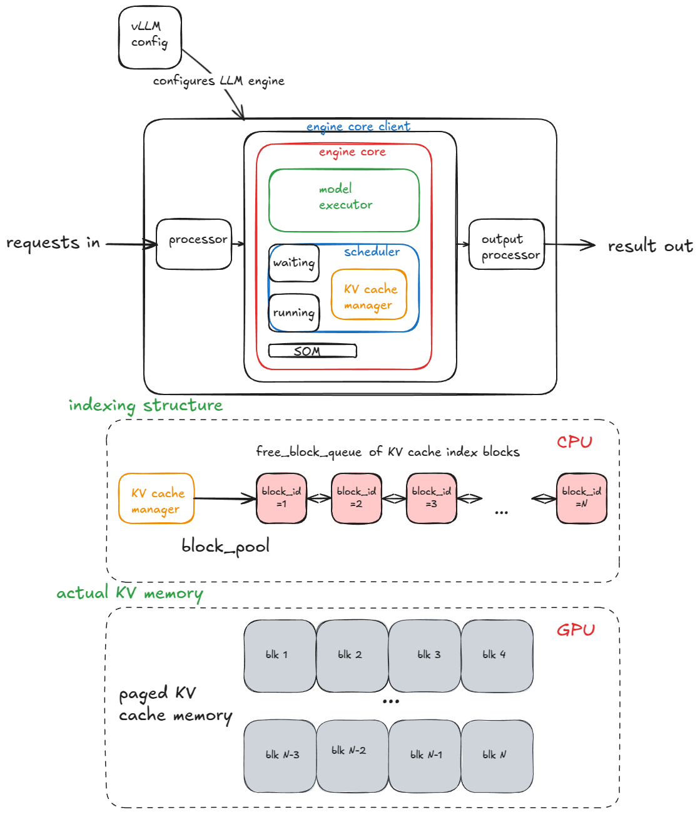
Figure 1: Core components described in this section and their relationships
Note: Block size for a standard transformer layer (non-MLA [4]) is computed as follows: 2 (key/value) *
block_size(default=16) *num_kv_heads*head_size*dtype_num_bytes(e.g. 2 for bf16)
During model executor construction, a Worker
object is created, and three key procedures are executed. (Later, with
MultiProcExecutor,
these same procedures run independently on each worker process across
different GPUs.)
- Init device:
- Assign a CUDA device (e.g. "cuda:0") to the worker and check that the model dtype is supported (e.g. bf16)
- Verify enough VRAM is available, given the requested
gpu_memory_utilization(e.g. 0.8 → 80% of total VRAM) - Set up distributed settings (DP / TP / PP / EP, etc.)
- Instantiate a
model_runner(holds the sampler, KV cache, and forward-pass buffers such asinput_ids,positions, etc.) - Instantiate an
InputBatchobject (holds CPU-side forward-pass buffers, block tables for KV-cache indexing, sampling metadata, etc.)
- Load model:
- Instantiate the model architecture
- Load the model weights
- Call model.eval() (PyTorch's inference mode)
- Optional: call torch.compile() on the model
- Initialize KV cache
- Get per-layer KV-cache spec. Historically this was always
FullAttentionSpec(homogeneous transformer), but with hybrid models (sliding window, Transformer/SSM like Jamba) it became more complex (see Jenga [5]) - Run a dummy/profiling forward pass and take a GPU memory snapshot to compute how many KV cache blocks fit in available VRAM
- Allocate, reshape and bind KV cache tensors to attention layers
- Prepare attention metadata (e.g. set the backend to FlashAttention) later consumed by kernels during the fwd pass
- Unless
--enforce-eageris provided, for each of warmup batch sizes do a dummy run and capture CUDA graphs. CUDA graphs record the whole sequence of GPU work into a DAG. Later during fwd pass we launch/replay pre-baked graphs and cut on kernel launch overhead and thus improve latency.
I've abstracted away many low-level details here — but these are the core pieces I'll introduce now, since I'll reference them repeatedly in the following sections.
Now that we have the engine initialized let's proceed to the generate
function.
Generate function
The first step is to validate and feed requests into the engine. For each prompt we:
- Create a unique request ID and capture its arrival time
- Call an input preprocessor that tokenizes the prompt and returns a
dictionary containing
prompt,prompt_token_ids, and atype(text, tokens, embeds, etc.) - Pack this info into an
EngineCoreRequest, adding priority, sampling params, and other metadata - Pass the request into the engine core, which wraps it in a
Requestobject and sets its status toWAITING. This request is then added to the scheduler'swaitingqueue (append if FCFS, or heap-push if priority)
At this point the engine has been fed and execution can begin. In the synchronous engine example, these initial prompts are the only ones we'll process — there's no mechanism to inject new requests mid-run. In contrast, the asynchronous engine supports this (aka continuous batching [6]): after each step, both new and old requests are considered.
Note: Because the forward pass flattens the batch into a single sequence and custom kernels handle it efficiently, continuous batching is fundamentally supported even in the synchronous engine.
Next, as long as there are requests to process, the engine repeatedly
calls its step()
function. Each step has three stages:
- Schedule: select which requests to run in this step (decode, and/or (chunked) prefill)
- Forward pass: run the model and sample tokens
- Postprocess: append sampled token IDs to each
Request, detokenize, and check stop conditions. If a request is finished, clean up (e.g. return its KV-cache blocks tofree_block_queue) and return the output early
Note: Stop conditions are:
- The request exceeds its length limit (
max_model_lengthor its ownmax_tokens)- The sampled token is the EOS ID (unless
ignore_eosis enabled -> useful for benchmarking when we want to force a generation of a certain number of out tokens)- The sampled token matches any of the
stop_token_idsspecified in the sampling parameters- Stop strings are present in the output - we truncate the output until the first stop string appearance and abort the request in the engine (note that
stop_token_idswill be present in the output but stop strings will not).
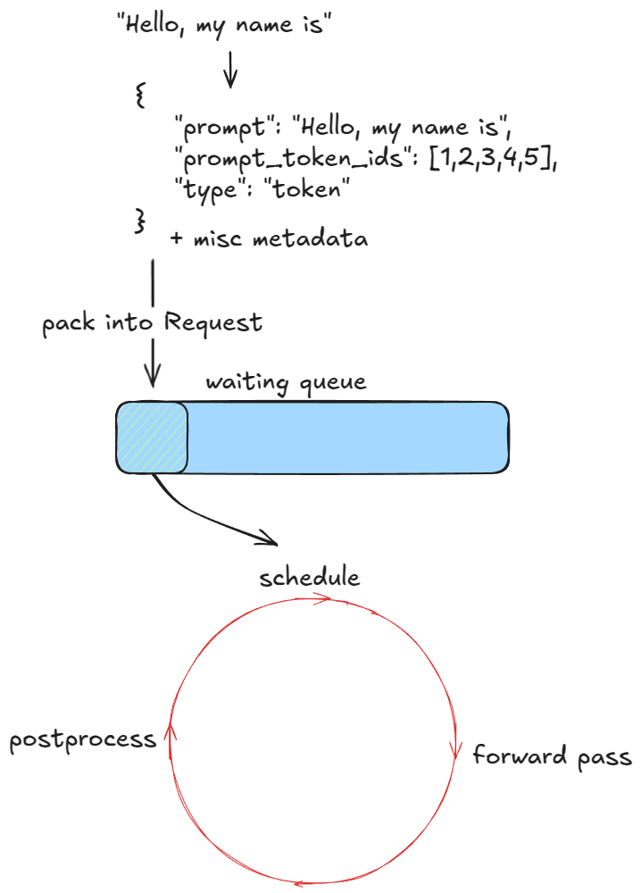
Figure 2: Engine loop
Note: In streaming mode, we would send intermediate tokens as they are generated, but we'll ignore that for now.
Next, we'll examine scheduling in more detail.
Scheduler
There are two main types of workloads an inference engine handles:
- Prefill requests — a forward pass over all prompt tokens. These are usually compute-bound (threshold depends on hardware and prompt length). At the end, we sample a single token from the probability distribution of the final token's position.
- Decode requests — a forward pass over just the most recent token. All earlier KV vectors are already cached. These are memory-bandwidth-bound, since we still need to load all LLM weights (and KV caches) just to compute one token.
Note: In the benchmarking section we'll analyze the so-called roofline model of GPU perf. That will go into more detail behind prefill/decode perf profiles.
The V1 scheduler can mix both types of requests in the same step, thanks to smarter design choices. In contrast, the V0 engine could only process either prefill or decode at once.
The scheduler prioritizes decode requests — i.e. those already in the
running
queue. For each such request it:
- Computes the number of new tokens to generate (not always 1, due to speculative decoding and async scheduling — more on that later).
- Calls the KV-cache manager's
allocate_slotsfunction (details below). - Updates the token budget by subtracting the number of tokens from step 1.
After that, it processes prefill requests from the waiting
queue, it:
- Retrieves the number of computed blocks (returns 0 if prefix caching is disabled — we'll cover that later).
- Calls the KV-cache manager's
allocate_slotsfunction. - Pops the request from waiting and moves it to running, setting its
status to
RUNNING. - Updates the token budget.
Let's now look at what allocate_slots
does, it:
- Computes number of blocks — determines how many new
KV-cache blocks (
n) must be allocated. Each block stores 16 tokens by default. For example, if a prefill request has 17 new tokens, we needceil(17/16) = 2blocks. - Checks availability — if there aren't enough blocks
in the manager's pool, exit early. Depending on whether it's a decode or
prefill request, the engine may attempt recompute preemption (swap
preemption was supported in V0) by evicting low-priority requests
(calling
kv_cache_manager.freewhich returns KV blocks to block pool), or it might skip scheduling and continue execution. - Allocates blocks — via the KV-cache manager's
coordinator, fetches the first
nblocks from the block pool (thefree_block_queuedoubly linked list mentioned earlier). Stores toreq_to_blocks, the dictionary mapping eachrequest_idto its list of KV-cache blocks.
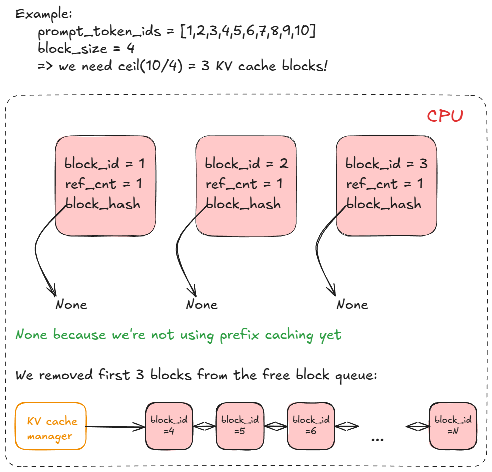
Figure 3: list of KV cache blocks
We're finally ready to do a forward pass!
Run forward pass
We call model executor's execute_model,
which delegates to the Worker,
which in turn delegates to the model runner.
Here are the main steps:
- Update states — prune finished requests from
input_batch; update misc fwd pass related metadata (e.g., KV cache blocks per request that will be used to index into paged KV cache memory). - Prepare inputs — copy buffers from CPU→GPU; compute
positions; build
slot_mapping(more on that in example); construct attention metadata. - Forward pass — run the model with custom paged attn kernels. All sequences are flattened and concatenated into one long "super sequence". Position indices and attention masks ensure each sequence only attends to its own tokens, which enables continuous batching without right-padding.
- Gather last-token states — extract hidden states for each sequence's final position and compute logits.
- Sample — sample tokens from computed logits as dictated by the sampling config (greedy, temperature, top-p, top-k, etc.).
Forward-pass step itself has two execution modes:
- Eager mode — run the standard PyTorch forward pass when eager execution is enabled.
- "Captured" mode — execute/replay a pre-captured CUDA Graph when eager is not enforced (remember we captured these during engine construction in the initialize KV cache procedure).
Here is a concrete example that should make continuous batching and paged attention clear:
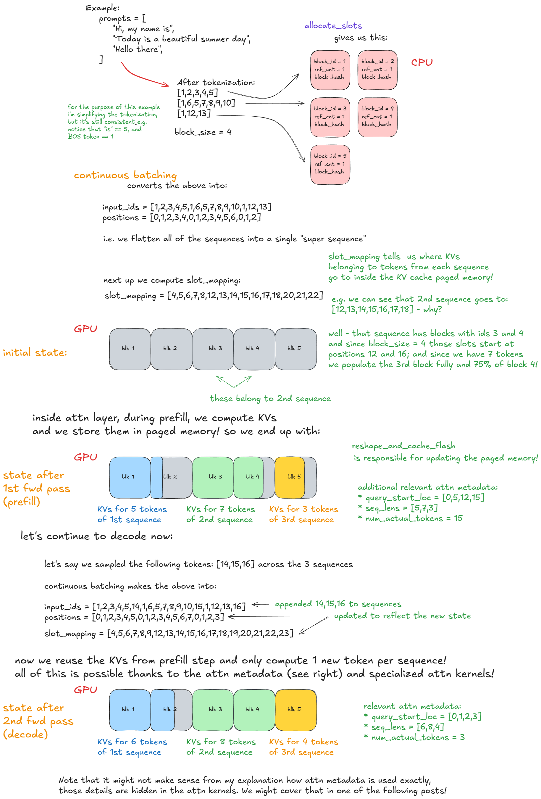
Figure 4: Forward pass: continuous batching and paged attention
Advanced Features — extending the core engine logic
With the basic engine flow in place, we can now look at the advanced features.
We've already discussed preemption, paged attention, and continuous batching.
Next, we'll dive into:
- Chunked prefill
- Prefix caching
- Guided decoding (through grammar-constrained finite-state machines)
- Speculative decoding
- Disaggregated P/D (prefill/decoding)
Chunked prefill
Chunked prefill is a technique for handling long prompts by splitting their prefill step into smaller chunks. Without it, we could end up with a single very long request monopolizing one engine step disallowing other prefill requests to run. That would postpone all other requests and increase their latency.
For example, let each chunk contain n
(=8) tokens, labeled with lowercase letters separated by "-". A long
prompt P
could look like x-y-z,
where z
is an incomplete chunk (e.g. 2 toks). Executing the full prefill for
P
would then take ≥ 3 engine steps (> can happen if it's not scheduled
for execution in one of the steps), and only in the last chunked prefill
step would we sample one new token.
Here is that same example visually:
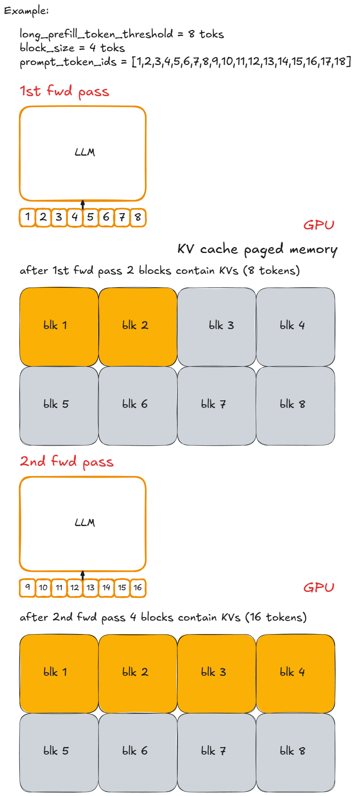
Figure 5: Chunked prefill
Implementation is straightforward: cap the number of new tokens per
step. If the requested number exceeds long_prefill_token_threshold,
reset it to exactly that value. The underlying indexing logic (described
earlier) takes care of the rest.
In vLLM V1, you enable chunked prefill by setting long_prefill_token_threshold
to a positive integer. (Technically, it can happen irrespective of this,
if the prompt length exceeds the token budget we truncate it and run a
chunked prefill.)
Prefix Caching
To explain how prefix caching works, let's take the original code example and tweak it a bit:
from vllm import LLM, SamplingParams
long_prefix = "<a piece of text that is encoded into more than block_size tokens>"
prompts = [
"Hello, my name is",
"The president of the United States is",
]
sampling_params = SamplingParams(temperature=0.8, top_p=0.95)
def main():
llm = LLM(model="TinyLlama/TinyLlama-1.1B-Chat-v1.0")
outputs = llm.generate(long_prefix + prompts[0], sampling_params)
outputs = llm.generate(long_prefix + prompts[1], sampling_params)
if __name__ == "__main__":
main()Prefix caching avoids recomputing tokens that multiple prompts share at the beginning - hence prefix.
The crucial piece is the long_prefix:
it's defined as any prefix longer than a KV-cache block (16 tokens by
default). To simplify our example let's say long_prefix
has exactly length n x block_size
(where n ≥ 1).
Note: i.e. it perfectly aligns with block boundary - otherwise we'd have to recompute
long_prefix_len % block_sizetokens as we can't cache incomplete blocks.
Without prefix caching, each time we process a new request with the
same long_prefix,
we'd recompute all n x block_size
tokens.
With prefix caching, those tokens are computed once (their KVs stored in KV cache paged memory) and then reused, so only the new prompt tokens need processing. This speeds up prefill requests (though it doesn't help with decode).
How does this work in vLLM?
During the first generate
call, in the scheduling stage, inside kv_cache_manager.get_computed_blocks,
the engine invokes hash_request_tokens:
- This function splits the
long_prefix + prompts[0]into 16-token chunks. - For each complete chunk, it computes a hash (using either the built-in hash or SHA-256, which is slower but has fewer collisions). The hash combines the previous block's hash, the current tokens, and optional metadata.
Note: optional metadata includes: MM hash, LoRA ID, cache salt (injected into hash of the first block ensures only requests with this cache salt can reuse blocks).
- Each result is stored as a
BlockHashobject containing both the hash and its token IDs. We return a list of block hashes.
The list is stored in self.req_to_block_hashes[request_id].
Next, the engine calls find_longest_cache_hit
to check if any of these hashes already exist in cached_block_hash_to_block.
On the first request, no hits are found.
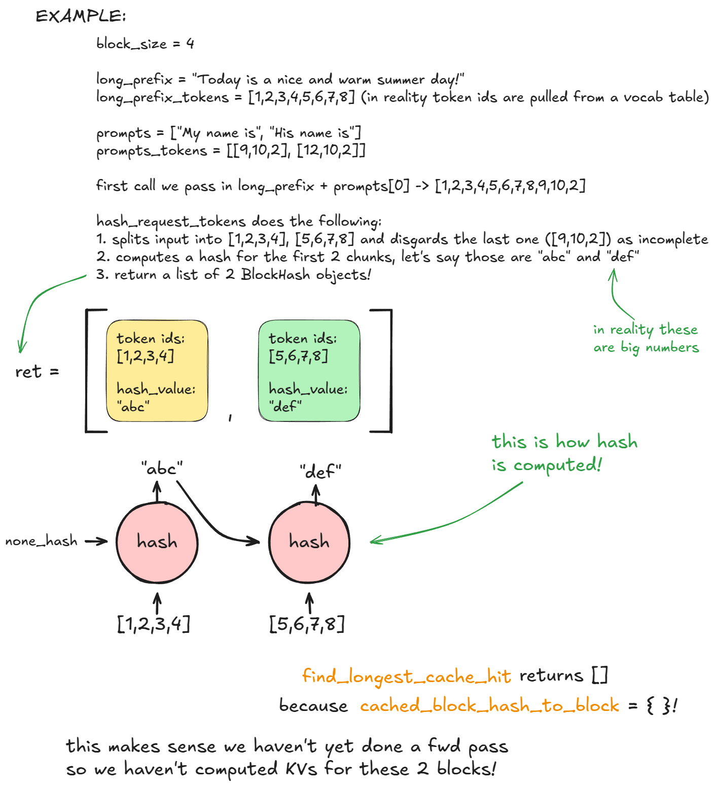
Figure 6: Prefix caching - hash function
Then we call allocate_slots
which calls coordinator.cache_blocks,
which associates the new BlockHash
entries with allocated KV blocks and records them in cached_block_hash_to_block.
Afterwards, the forward pass will populate KVs in paged KV cache memory corresponding to KV cache blocks that we allocated above.
Note: After many engine steps it'll allocate more KV cache blocks but it doesn't matter for our example because the prefix has diverged immediately after
long_prefix.
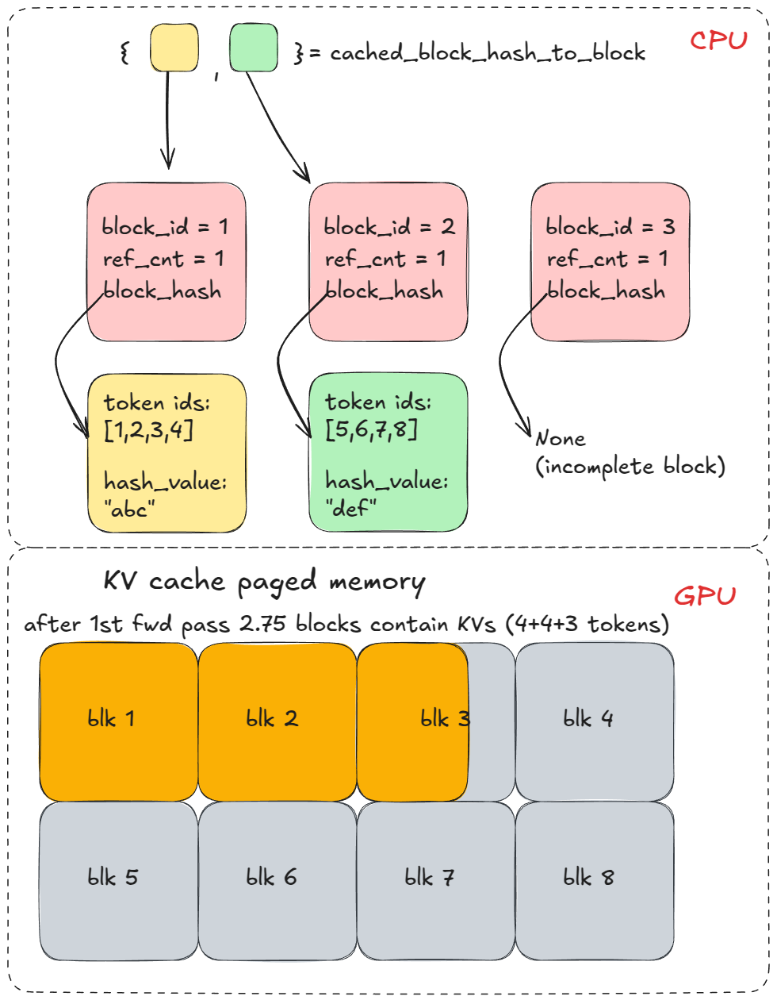
Figure 7: Prefix caching - populate KVs in paged memory
On a second generate
call with the same prefix, steps 1-3 repeat, but now find_longest_cache_hit
finds matches for all n
blocks (via linear search). The engine can reuse those KV blocks
directly.
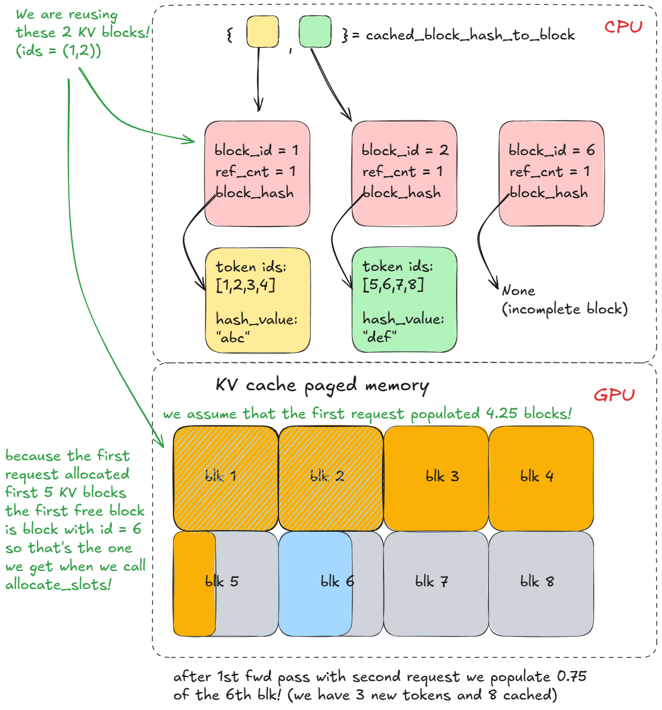
Figure 8: Prefix caching - reuse KVs
If the original request were still alive, the reference count for
those blocks would increment (e.g. to 2). In this example, the first
request has already completed, so the blocks were freed back to the pool
and their reference counts set back to 0. Because we were able to
retrieve them from cached_block_hash_to_block
we know they're valid (the logic of the KV cache manager is setup in
such a way), so we just remove them from free_block_queue
again.
[!NOTE] Advanced note: KV-cache blocks become invalid only when they're about to be reallocated from the
free_block_queue(which pops from the left) and we discover the block still has an associated hash and is present incached_block_hash_to_block. At that moment, we clear the block's hash and remove its entry fromcached_block_hash_to_block, ensuring it can't be reused via prefix caching (at least not for that old prefix).
And that's the gist of prefix caching: don't recompute prefixes you've already seen — just reuse their KV cache!
If you understood this example you also understood how paged attention works.
Prefix caching is enabled by default. To disable it: enable_prefix_caching = False.
Guided Decoding (FSM)
Guided decoding is a technique where, at each decoding step, the logits are constrained by a grammar-based finite state machine. This ensures that only tokens allowed by the grammar can be sampled.
It's a powerful setup: you can enforce anything from regular grammars (Chomsky type-3, e.g. arbitrary regex patterns) all the way up to context-free grammars (type-2, which cover most programming languages).
To make this less abstract, let's start with the simplest possible example, building on our earlier code:
from vllm import LLM, SamplingParams
from vllm.sampling_params import GuidedDecodingParams
prompts = [
"This sucks",
"The weather is beautiful",
]
guided_decoding_params = GuidedDecodingParams(choice=["Positive", "Negative"])
sampling_params = SamplingParams(guided_decoding=guided_decoding_params)
def main():
llm = LLM(model="TinyLlama/TinyLlama-1.1B-Chat-v1.0")
outputs = llm.generate(prompts, sampling_params)
if __name__ == "__main__":
main()In the toy example I gave (assume character-level tokenization): at prefill, the FSM masks logits so only "P" or "N" are viable. If "P" is sampled, the FSM moves to the "Positive" branch; next step only "o" is allowed, and so on.
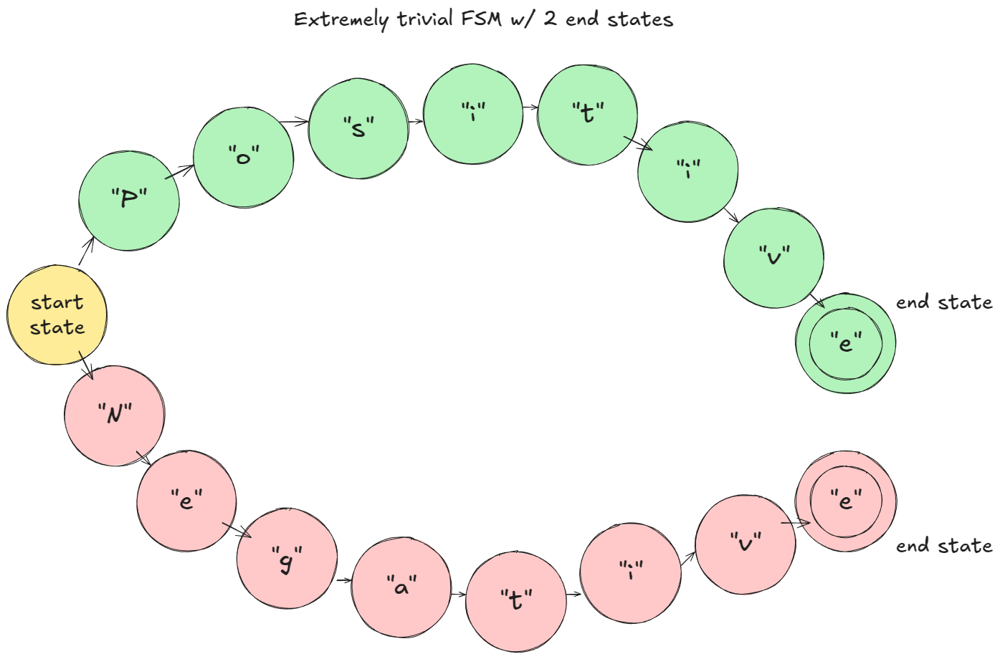
Figure 9: Toy example FSM
How this works in vLLM:
- At LLM engine construction, a
StructuredOutputManageris created; it has access to the tokenizer and maintains a_grammar_bitmasktensor. - When adding a request, its status is set to
WAITING_FOR_FSMandgrammar_initselects the backend compiler (e.g.,xgrammar[7]; note that backends are 3rd party code). - The grammar for this request is compiled asynchronously.
- During scheduling, if the async compile has completed, the status
switches to
WAITINGandrequest_idis added tostructured_output_request_ids; otherwise it's placed inskipped_waiting_requeststo retry on next engine step. - After the scheduling loop (still inside scheduling), if there are
FSM requests, the
StructuredOutputManagerasks the backend to prepare/update_grammar_bitmask. - After the forward pass produces logits, xgr_torch_compile's function expands the bitmask to vocab size (32x expansion ratio because we use 32 bit integers) and masks disallowed logits to –∞.
- After sampling the next token, the request's FSM is advanced via
accept_tokens. Visually we move to the next state on the FSM diagram.
Step 6 deserves further clarification.
If vocab_size = 32,
_grammar_bitmask
is a single integer; its binary representation encodes which tokens are
allowed ("1") vs disallowed ("0"). For example, "101…001" expands to a
length-32 array [1, 0, 1, ..., 0, 0, 1];
positions with 0 get logits set to –∞. For larger vocabularies, multiple
32-bit words are used and expanded/concatenated accordingly. The backend
(e.g., xgrammar)
is responsible for producing these bit patterns using the current FSM
state.
Note: Most of the complexity here is hidden in the 3rd party libs like xgrammar.
Here is an even simpler example with vocab_size = 8 and 8-bit integers (for those of you who like my visuals):
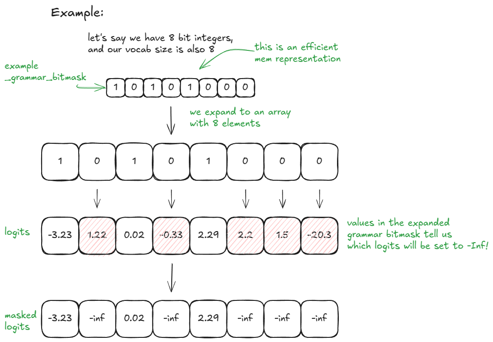
Figure 10: Toy example
You can enable this in vLLM by passing in a desired guided_decoding
config.
Speculative Decoding
In autoregressive generation, each new token requires a forward pass
of the large LM. This is expensive — every step reloads and applies all
model weights just to compute a single token! (assuming batch size == 1,
in general it's B)
Speculative decoding [8] speeds this up by
introducing a smaller draft LM. The draft proposes k
tokens cheaply. But we don't ultimately want to sample from the smaller
model — it's only there to guess candidate continuations. The large
model still decides what's valid.
Here are the steps:
- Draft: run the small model on the current context
and propose
ktokens - Verify: run the large model once on context +
kdraft tokens. This produces probabilities for thosekpositions plus one extra (so we getk+1candidates) - Accept/reject: going from left to right over the
kdraft tokens:
- If the large model's probability for the draft token ≥ the draft's probability, accept it
- Otherwise, accept it with probability
p_large(token)/p_draft(token) - Stop at the first rejection, or accept all
kdraft tokens- If all
kdraft tokens are accepted, also sample the extra(k+1)-th token "for free" from the large model (we already computed that distribution) - If there was a rejection create a new rebalanced distribution at
that position (
p_large - p_draft, clamp min at 0, normalize to sum to 1) and sample the last token from it
- If all
Why this works: Although we use the small model to
propose candidates, the accept/reject rule guarantees that in
expectation the sequence is distributed exactly as if we had sampled
token by token from the large model. This means speculative decoding is
statistically equivalent to standard autoregressive decoding — but
potentially much faster, since a single large-model pass can yield up to
k+1
tokens.
Note: I recommend looking at gpt-fast for a simple implementation, and the original paper for the math details and the proof of equivalence to sampling from the full model.
vLLM V1 does not support the LLM draft model method, instead it implements faster—but less accurate—proposal schemes: n-gram, EAGLE [9], and Medusa [10].
One-liners on each:
- n-gram: take the last
prompt_lookup_maxtokens; find a prior match in the sequence; if found, propose thektokens that followed that match; otherwise decrement the window and retry down toprompt_lookup_min
Note: The current implementation returns
ktokens after the first match. It feels more natural to introduce a recency bias and reverse the search direction? (i.e. last match)
Eagle: perform "model surgery" on the large LM—keep embeddings and LM head, replace the transformer stack with a lightweight MLP; fine-tune that as a cheap draft
Medusa: train auxiliary linear heads on top (embeddings before LM head) of the large model to predict the next
ktokens in parallel; use these heads to propose tokens more efficiently than running a separate small LM
Here's how to invoke speculative decoding in vLLM using ngram
as the draft method:
from vllm import LLM, SamplingParams
prompts = [
"Hello, my name is",
"The president of the United States is",
]
sampling_params = SamplingParams(temperature=0.8, top_p=0.95)
speculative_config={
"method": "ngram",
"prompt_lookup_max": 5,
"prompt_lookup_min": 3,
"num_speculative_tokens": 3,
}
def main():
llm = LLM(model="TinyLlama/TinyLlama-1.1B-Chat-v1.0", speculative_config=speculative_config)
outputs = llm.generate(prompts, sampling_params)
if __name__ == "__main__":
main()How does this work in vLLM?
Setup (during engine construction):
- Init device: create a
drafter(draft model, e.g.,NgramProposer) and arejection_sampler(parts of it are written in Triton). - Load model: load draft model weights (no-op for n-gram).
After that in the generate
function (assume we get a brand new request):
- Run the regular prefill step with the large model.
- After the forward pass and standard sampling, call
propose_draft_token_ids(k)to samplekdraft tokens from the draft model. - Store these in
request.spec_token_ids(update the request metadata). - On the next engine step, when the request is in the running queue,
add
len(request.spec_token_ids)to the "new tokens" count soallocate_slotsreserves sufficient KV blocks for the fwd pass. - Copy
spec_token_idsintoinput_batch.token_ids_cputo form (context + draft) tokens. - Compute metadata via
_calc_spec_decode_metadata(this copies over tokens frominput_batch.token_ids_cpu, prepares logits, etc.), then run a large-model forward pass over the draft tokens. - Instead of regular sampling from logits, use the
rejection_samplerto accept/reject left-to-right and produceoutput_token_ids. - Repeat steps 2-7 until a stop condition is met.
The best way to internalize this is to fire up your debugger and step through the codebase, but this section hopefully gives you a taste for it. This as well:
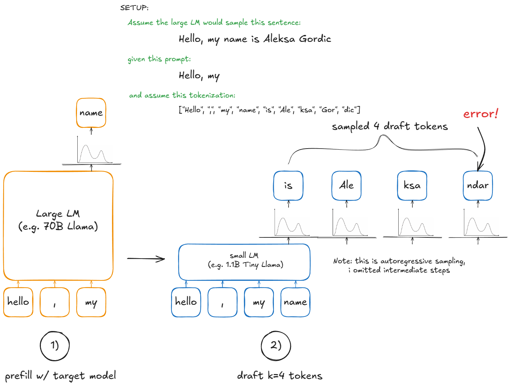
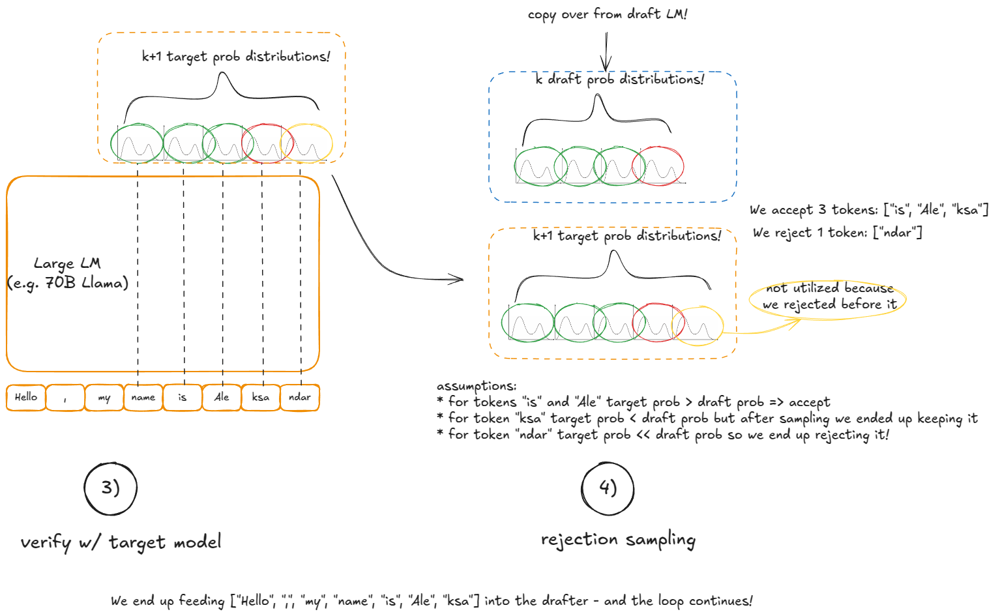
Figure 11: Speculative decoding
Disaggregated P/D
I've already previously hinted at the motivation behind disaggregated P/D (prefill/decode).
Prefill and decode have very different performance profiles
(compute-bound vs. memory-bandwidth-bound), so separating their
execution is a sensible design. It gives tighter control over latency —
both TFTT
(time-to-first-token) and ITL
(inter-token latency) — more on this in the benchmarking section.
In practice, we run N
vLLM prefill instances and M
vLLM decode instances, autoscaling them based on the live request mix.
Prefill workers write KV to a dedicated KV-cache service; decode workers
read from it. This isolates long, bursty prefill from steady,
latency-sensitive decode.
How does this work in vLLM?
For clarity, the example below relies on ExampleConnector
(renamed from SharedStorageConnector
in vLLM #30201), a debugging connector
implementation used to illustrate the mechanics. Current vLLM rejects
the old name with Unsupported connector type: SharedStorageConnector.
Note: Connector is vLLM's abstraction for handling the exchange of KVs between instances. Connector interface is not yet stable, there are some near-term improvements planned which will involve changes, some potentially breaking.
We launch 2 vLLM instances (GPU 0 for prefill and GPU 1 for decode), and then transfer the KV cache between them:
import os
import time
from multiprocessing import Event, Process
import multiprocessing as mp
from vllm import LLM, SamplingParams
from vllm.config import KVTransferConfig
prompts = [
"Hello, my name is",
"The president of the United States is",
]
def run_prefill(prefill_done):
os.environ["CUDA_VISIBLE_DEVICES"] = "0"
sampling_params = SamplingParams(temperature=0, top_p=0.95, max_tokens=1)
ktc=KVTransferConfig(
kv_connector="ExampleConnector",
kv_role="kv_both",
kv_connector_extra_config={"shared_storage_path": "local_storage"},
)
llm = LLM(model="TinyLlama/TinyLlama-1.1B-Chat-v1.0", kv_transfer_config=ktc)
llm.generate(prompts, sampling_params)
prefill_done.set() # notify decode instance that KV cache is ready
# To keep the prefill node running in case the decode node is not done;
# otherwise, the script might exit prematurely, causing incomplete decoding.
try:
while True:
time.sleep(1)
except KeyboardInterrupt:
print("Script stopped by user.")
def run_decode(prefill_done):
os.environ["CUDA_VISIBLE_DEVICES"] = "1"
sampling_params = SamplingParams(temperature=0, top_p=0.95)
ktc=KVTransferConfig(
kv_connector="ExampleConnector",
kv_role="kv_both",
kv_connector_extra_config={"shared_storage_path": "local_storage"},
)
llm = LLM(model="TinyLlama/TinyLlama-1.1B-Chat-v1.0", kv_transfer_config=ktc)
prefill_done.wait() # block waiting for KV cache from prefill instance
# Internally it'll first fetch KV cache before starting the decoding loop
outputs = llm.generate(prompts, sampling_params)
if __name__ == "__main__":
prefill_done = Event()
prefill_process = Process(target=run_prefill, args=(prefill_done,))
decode_process = Process(target=run_decode, args=(prefill_done,))
prefill_process.start()
decode_process.start()
decode_process.join()
prefill_process.terminate()Note: I've also experimented with
LMCache[11], the fastest production-ready connector (uses NVIDIA's NIXL as the backend), but it's still at the bleeding edge and I ran into some bugs. Since much of its complexity lives in an external repo,ExampleConnectoris a better choice for explanation.
These are the steps in vLLM:
- Instantiation — During engine construction, connectors are created in two places:
- Inside the worker's init device procedure (under init worker distributed environment function), with role "worker".
- Inside the scheduler constructor, with role "scheduler".
- Cache lookup — When the scheduler processes prefill
requests from the
waitingqueue (after local prefix-cache checks), it calls connector'sget_num_new_matched_tokens. This checks for externally cached tokens in the KV-cache server. Prefill always sees 0 here; decode may have a cache hit. The result is added to the local count before callingallocate_slots. - State update — The scheduler then calls
connector.update_state_after_alloc, which records requests that had a cache (no-op for prefill). Build metadata object— At the end of scheduling, the scheduler callsmeta = connector.build_connector_meta:
- Prefill adds all requests with
is_store=True(to upload KV). - Decode adds requests with
is_store=False(to fetch KV).
- Context manager — Before the forward pass, the engine enters a KV-connector context manager:
- On enter:
kv_connector.start_load_kvis called. For decode, this loads KV from the external server and injects it into paged memory. For prefill, it's a no-op. - On exit:
kv_connector.wait_for_saveis called. For prefill, this blocks until KV is uploaded to the external server. For decode, it's a no-op.
Here is a visual example:
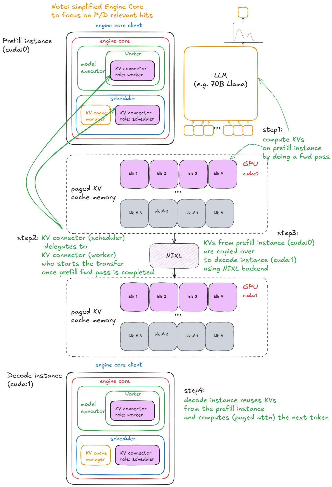
Figure 12: disaggregated P/D
[!NOTE] Additional notes:
- For
ExampleConnector"external server" is just a local file system.- Depending on configuration, KV transfers can also be done layer-by-layer (before/after each attention layer).
- Decode loads external KV only once, on the first step of its requests; afterwards it computes/stores locally.
From UniprocExecutor to MultiProcExecutor
With the core techniques in place, we can now talk about scaling up.
Suppose your model weights no longer fit into a single GPU's VRAM.
The first option is to shard the model across multiple GPUs on the
same node using tensor parallelism (e.g., TP=8).
If the model still doesn't fit, the next step is pipeline parallelism
across nodes.
[!NOTE] Notes:
- Intranode bandwidth is significantly higher than internode, which is why tensor parallelism (TP) is generally preferred over pipeline parallelism (PP). (It is also true that PP communicates less data than TP.)
- I'm not covering expert parallelism (EP) since we're focusing on standard transformers rather than MoE, nor sequence parallelism, as TP and PP are the most commonly used in practice.
At this stage, we need multiple GPU processes (workers) and an
orchestration layer to coordinate them. That's exactly what MultiProcExecutor
provides.
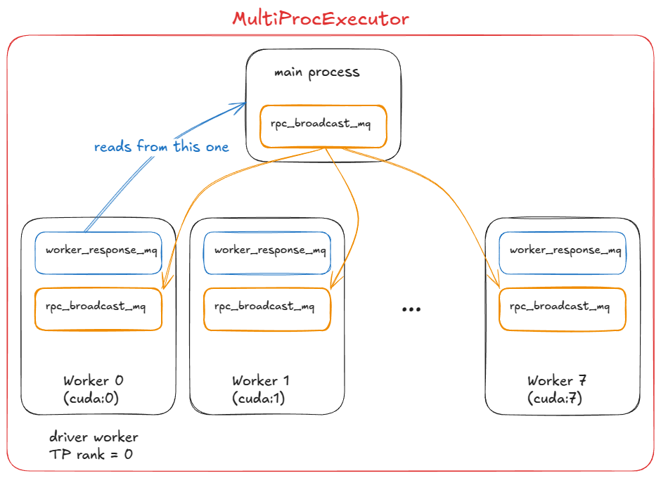
Figure 13: MultiProcExecutor in a TP=8 setting (driver worker being rank 0)
How this works in vLLM:
MultiProcExecutorinitializes anrpc_broadcast_mqmessage queue (implemented with shared memory under the hood).- The constructor loops over
world_size(e.g.TP=8 ⇒ world_size=8) and spawns a daemon process for each rank viaWorkerProc.make_worker_process. - For each worker, the parent first creates a reader and writer pipe.
- The new process runs
WorkerProc.worker_main, which instantiates a worker (going through the same "init device", "load model", etc. as inUniprocExecutor). - Each worker determines whether it is the driver (rank 0 in the TP group) or a regular worker. Every worker sets up two queues:
rpc_broadcast_mq(shared with the parent) for receiving work.worker_response_mqfor sending responses back.
- During initialization, each child sends its
worker_response_mqhandle to the parent via the pipe. Once all are received, the parent unblocks — this completes coordination. - Workers then enter a busy loop, blocking on
rpc_broadcast_mq.dequeue. When a work item arrives, they execute it (just like inUniprocExecutor, but now with TP/PP-specific partitioned work). Results are sent back throughworker_response_mq.enqueue. - At runtime, when a request arrives,
MultiProcExecutorenqueues it intorpc_broadcast_mq(non-blocking) for all children workers. It then waits on the designated output rank'sworker_response_mq.dequeueto collect the final result.
From the engine's perspective, nothing has changed — all of this
multiprocessing complexity is abstracted away through a call to model
executor's execute_model.
- In the
UniProcExecutorcase: execute_model directly leads to calling execute_model on the worker - In the
MultiProcExecutorcase: execute_model indirectly leads to calling execute_model on each worker throughrpc_broadcast_mq
At this point, we can run models that are as large as resources allow using the same engine interface.
The next step is to scale out: enable data parallelism (DP > 1)
replicating the model across nodes, add a lightweight DP coordination
layer, introduce load balancing across replicas, and place one or more
API servers in front to handle incoming traffic.
Distributed system serving vLLM
There are many ways to set up serving infrastructure, but to stay concrete, here's one example: suppose we have two H100 nodes and want to run four vLLM engines across them.
If the model requires TP=4,
we can configure the nodes like this.
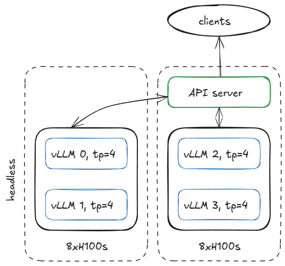
Figure 14: server configuration with 2 8xH100 nodes (1 headless, 1 api server)
On the first node, run the engine in headless mode (no API server) with the following arguments:
vllm serve <model-name>
--tensor-parallel-size 4
--data-parallel-size 4
--data-parallel-size-local 2
--data-parallel-start-rank 0
--data-parallel-address <master-ip>
--data-parallel-rpc-port 13345
--headlessand run that same command on the other node with few tweaks:
- no
--headless - modify DP start rank
vllm serve <model-name>
--tensor-parallel-size 4
--data-parallel-size 4
--data-parallel-size-local 2
--data-parallel-start-rank 2
--data-parallel-address <master-ip>
--data-parallel-rpc-port 13345Note: This assumes networking is configured so all nodes can reach the specified IP and port.
How does this work in VLLM?
On the headless server node
On the headless node, a CoreEngineProcManager
launches 2 processes (per --data-parallel-size-local)
each running EngineCoreProc.run_engine_core.
Each of these functions creates a DPEngineCoreProc
(the engine core) and then enters its busy loop.
DPEngineCoreProc
initializes its parent EngineCoreProc
(child of EngineCore),
which:
- Creates an
input_queueandoutput_queue(queue.Queue). - Performs an initial handshake with the frontend on the other node
using a
DEALERZMQ socket (async messaging lib), and receives coordination address info. - Initializes DP group (e.g. using NCCL backend).
- Initializes the
EngineCorewithMultiProcExecutor(TP=4on 4 GPUs as described earlier). - Creates a
ready_event(threading.Event). - Starts an input deamon thread (
threading.Thread) runningprocess_input_sockets(…, ready_event). Similarly starts an output thread. - Still in the main thread, waits on
ready_eventuntil all input threads across all 4 processes (spanning the 2 nodes) have completed the coordination handshake finally executingready_event.set(). - Once unblocked, sends a "ready" message to the frontend with
metadata (e.g.,
num_gpu_blocksavailable in paged KV cache memory). - The main, input, and output threads then enter their respective busy loops.
TL;DR: We end up with 4 child processes (one per DP replica), each running a main, input, and output thread. They complete a coordination handshake with the DP coordinator and frontend, then all three threads per process run in steady-state busy loops.
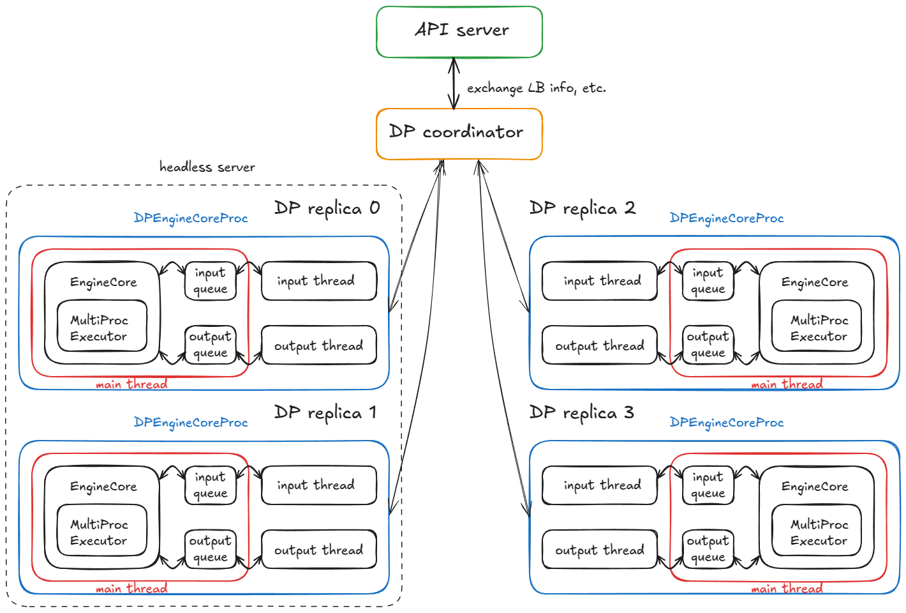
Figure 15: distributed system with 4 DP replicas running 4 DPEngineCoreProc
Current steady state:
- Input thread — blocks on the input socket until a
request is routed from the API server; upon receipt, it decodes the
payload, enqueues a work item via
input_queue.put_nowait(...), and returns to blocking on the socket. - Main thread — wakes on
input_queue.get(...), feeds the request to the engine;MultiProcExecutorruns the forward pass and enqueues results tooutput_queue. - Output thread — wakes on
output_queue.get(...), sends the result back to the API server, then resumes blocking.
Additional mechanics:
- DP wave counter — the system tracks "waves"; when all engines become idle they quiesce, and the counter increments when new work arrives (useful for coordination/metrics).
- Control messages — the API server can send more than just inference requests (e.g., aborts and utility/control RPCs).
- Dummy steps for lockstep — if any DP replica has work, all replicas execute a forward step; replicas without requests perform a dummy step to participate in required synchronization points (avoids blocking the active replica).
Note: Lockstep clarification: this is actually only required for MoE models where the expert layers form an EP or TP group while attention layers are still DP. It's currently always done with DP - this is just because there's limited use for "built-in" non-MoE DP since you could just run multiple independent vLLMs and load-balance between them in a normal way.
Now for the second part, what happens on the API server node?
On the API server node
We instantiate an AsyncLLM
object (an asyncio wrapper around the LLM engine). Internally this
creates a DPLBAsyncMPClient
(data-parallel, load-balancing, asynchronous, multiprocessing
client).
Inside the parent class of MPClient,
the launch_core_engines
function runs and:
- Creates the ZMQ addresses used for the startup handshake (as seen on the headless node).
- Spawns a
DPCoordinatorprocess. - Creates a
CoreEngineProcManager(same as on the headless node).
Inside AsyncMPClient
(child of MPClient),
we:
- Create an
outputs_queue(asyncio.Queue). - We create an asyncio task
process_outputs_socketwhich communicates (through the output socket) with output threads of all 4DPEngineCoreProcand writes intooutputs_queue. - Subsequently one more asyncio task
output_handlerfromAsyncLLMreads from this queue and finally sends out information to thecreate_completionfunction.
Inside DPAsyncMPClient
we create an asyncio task run_engine_stats_update_task
which communicates with DP coordinator.
The DP coordinator mediates between the frontend (API server) and backend (engine cores). It:
- Periodically sends load-balancing info (queue sizes, waiting/running
requests) to the frontend's
run_engine_stats_update_task. - Handles
SCALE_ELASTIC_EPcommands from the frontend by dynamically changing the number of engines (only works with Ray backend). - Sends
START_DP_WAVEevents to the backend (when triggered by frontend) and reports wave-state updates back.
To recap, the frontend (AsyncLLM)
runs several asyncio tasks (remember: concurrent, not parallel):
- A class of tasks handles input requests through the
generatepath (each new client request spawns a new asyncio task). - Two tasks (
process_outputs_socket,output_handler) process output messages from the underlying engines. - One task (
run_engine_stats_update_task) maintains communication with the DP coordinator: sending wave triggers, polling LB state, and handling dynamic scaling requests.
Finally, the main server process creates a FastAPI app and mounts
endpoints such as OpenAIServingCompletion
and OpenAIServingChat,
which expose /completion,
/chat/completion,
and others. The stack is then served via Uvicorn.
So, putting it all together, here's the full request lifecycle!
You send from your terminal:
curl -X POST http://localhost:8000/v1/completions -H "Content-Type: application/json" -d '{
"model": "TinyLlama/TinyLlama-1.1B-Chat-v1.0",
"prompt": "The capital of France is",
"max_tokens": 50,
"temperature": 0.7
}'What happens next:
- The request hits
OpenAIServingCompletion'screate_completionroute on the API server. - The function tokenizes the prompt asynchronously, and prepares metadata (request ID, sampling params, timestamp, etc.).
- It then calls
AsyncLLM.generate, which follows the same flow as the synchronous engine, eventually invokingDPAsyncMPClient.add_request_async. - This in turn calls
get_core_engine_for_request, which does load balancing across engines based on the DP coordinator's state (picking the one that has minimal score / lowest load:score = len(waiting) * 4 + len(running)). - The
ADDrequest is sent to the chosen engine'sinput_socket. - At that engine:
- Input thread — unblocks, decodes data from the input socket, and
places a work item on the
input_queuefor the main thread. - Main thread — unblocks on
input_queue, adds the request to the engine, and repeatedly callsengine_core.step(), enqueueing intermediate results tooutput_queueuntil a stop condition is met.
Note: Reminder:
step()calls the scheduler, model executor (which in turn can beMultiProcExecutor!), etc. We have already seen this!
- Output thread — unblocks on
output_queueand sends results back through the output socket.
- Those results trigger the
AsyncLLMoutput asyncio tasks (process_outputs_socketandoutput_handler), which propagate tokens back to FastAPI'screate_completionroute. - FastAPI attaches metadata (finish reason, logprobs, usage info,
etc.) and returns a
JSONResponsevia Uvicorn to your terminal!
And just like that, your completion came back — the whole distributed
machinery hidden behind a simple curl
command! :) So much fun!!!
[!NOTE] Additional notes:
- When adding more API servers, load balancing is handled at the OS/socket level. From the application's perspective, nothing significant changes — the complexity is hidden.
- With Ray as a DP backend, you can expose a URL endpoint (
/scale_elastic_ep) that enables automatic scaling of the number of engine replicas up or down.
Benchmarks and auto-tuning - latency vs throughput
So far we've been analyzing the "gas particles" — the internals of how requests flow through the engine/system. Now it's time to zoom out and look at the system as a whole, and ask: how do we measure the performance of an inference system?
At the highest level there are two competing metrics:
- Latency — the time from when a request is submitted until tokens are returned
- Throughput — the number of tokens/requests per second the system can generate/process
Latency matters most for interactive applications, where users are waiting on responses.
Throughput matters in offline workloads like synthetic data generation for pre/post-training runs, data cleaning/processing, and in general - any type of offline batch inference jobs.
Before explaining why latency and throughput compete, let's define a few common inference metrics:
| Metric | Definition |
|---|---|
TTFT(time to first token) |
Time from request submission until the first output token is received |
ITL(inter-token latency) |
Time between two consecutive tokens (e.g., from token i-1 to token i) |
TPOT(time per output token) |
The average ITL across all output tokens in a request |
Latency / E2E(end-to-end latency) |
Total time to process a request, i.e. TTFT + sum of all ITLs, or equivalently the time between submitting request and receiving the last output token |
Throughput |
Total tokens processed per second (input, output, or both), or alternatively requests per second |
Goodput |
Throughput that meets service-level objectives (SLOs) such as max TTFT, TPOT, or e2e latency. For example, only tokens from requests meeting those SLOs are counted |
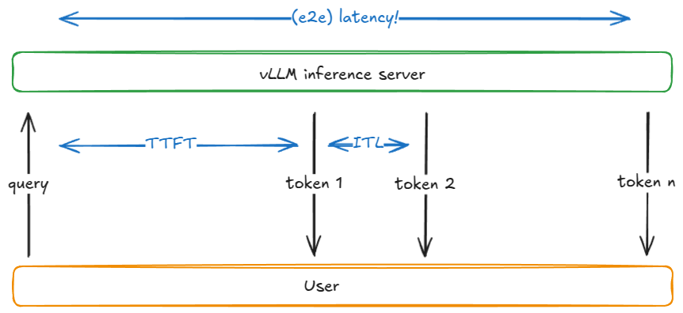
Figure 16: ttft, itl, e2e latency
Here is a simplified model explaining the competing nature of these 2 metrics.
[!NOTE] Assumption: weight i/o and not KV cache i/o dominates; i.e. we're dealing with short sequences.
The tradeoff becomes clear when looking at how batch size B
affects a single decode step. As B ↓
toward 1, ITL drops: there's less work per step and the token isn't
"competing" with others. As B ↑
toward infinity, ITL rises because we do more FLOPs per step—but
throughput improves (until we hit peak perf) because weight I/O is
amortized across more tokens.
A roofline model helps with understanding here: below a saturation
batch B_sat,
the step time is dominated by HBM bandwidth (streaming weights
layer-by-layer into on-chip memory), so step latency is nearly
flat—computing 1 vs 10 tokens can take a similar time. Beyond B_sat,
the kernels become compute-bound and step time grows roughly with B;
each extra token adds to ITL.
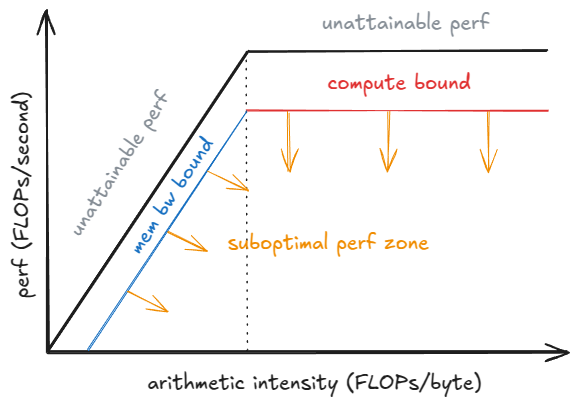
Figure 17: roofline perf model
[!NOTE] Note: For a more rigorous treatment, we have to account for kernel auto-tuning: as
Bgrows, the runtime may switch to more efficient kernels for that shape, changing the achieved performanceP_kernel. Step latency ist = FLOPs_step / P_kernel, whereFLOPs_stepis the work in the step. You can see that asP_kernelhitsP_peakmore compute per step will directly lead to an increase in latency.
How to benchmark in vLLM
vLLM provides a vllm bench {serve,latency,throughput}
CLI that wraps vllm / benchmarks / {server,latency,throughput}.py.
Here is what the scripts do:
- latency — uses a short input (default 32 tokens) and samples 128 output tokens with a small batch (default 8). It runs several iterations and reports e2e latency for the batch.
- throughput — submits a fixed set of prompts
(default: 1000 ShareGPT samples) all at once (aka as
QPS=Infmode), and reports input/output/total tokens and requests per second across the run. - serve — Launches a vLLM server and simulates a real-world workload by sampling request inter-arrival times from a Poisson (or more generally, Gamma) distribution. It sends requests over a time window, measures all the metrics we’ve discussed, and can optionally enforce a server-side max concurrency (via a semaphore, e.g. limiting the server to 64 concurrent requests).
Here is an example of how you can run the latency script:
vllm bench latency
--model <model-name>
--input-tokens 32
--output-tokens 128
--batch-size 8Note: Benchmark configs used in CI live under
.buildkite/nightly-benchmarks/tests.
There is also an auto-tune script that drives the serve benchmark to find argument settings that meet target SLOs (e.g., "maximize throughput while keeping p99 e2e < 500 ms"), returning a suggested config.
Epilogue
We began with the basic engine core (UniprocExecutor),
added advanced features like speculative decoding and prefix caching,
scaled up to MultiProcExecutor
(with TP/PP > 1),
and finally scaled out, wrapped everything in the asynchronous engine
and distributed serving stack—closing with how to measure system
performance.
vLLM also includes specialized handling that I've skipped. E.g.:
- Diverse hardware backends: TPUs, AWS Neuron (Trainium/Inferentia), etc.
- Architectures/techniques:
MLA,MoE, encoder-decoder (e.g., Whisper), pooling/embedding models,EPLB,m-RoPE,LoRA,ALiBi, attention-free variants, sliding-window attention, multimodal LMs, and state-space models (e.g., Mamba/Mamba-2, Jamba) - TP/PP/SP
- Hybrid KV-cache logic (Jenga), more complex sampling methods like beam sampling, and more
- Experimental: async scheduling
The nice thing is that most of these are orthogonal to the main flow described above—you can almost treat them like "plugins" (in practice there's some coupling, of course).
I love understanding systems. Having said that, the resolution definitely suffered at this altitude. In the next posts I'll zoom in on specific subsystems and get into the nitty-gritty details.
[!NOTE] Get in touch: If you spot any errors in the post, please DM me - feel free to drop me a message on X or LinkedIn or via anon feedback.
Acknowledgments
A huge thank you to Hyperstack for providing me with H100s for my experiments over the past year!
Thanks to Nick Hill (core vLLM contributor, RedHat), Kaichao You (core vLLM contributor), Mark Saroufim (PyTorch), Kyle Krannen (NVIDIA, Dynamo), and Ashish Vaswani for reading pre-release version of this blog post and providing feedback!
References
- vLLM https://github.com/vllm-project/vllm
- "Attention Is All You Need" https://arxiv.org/abs/1706.03762
- "Efficient Memory Management for Large Language Model Serving with PagedAttention" https://arxiv.org/abs/2309.06180
- "DeepSeek-V2: A Strong, Economical, and Efficient Mixture-of-Experts Language Model" https://arxiv.org/abs/2405.04434
- "Jenga: Effective Memory Management for Serving LLM with Heterogeneity" https://arxiv.org/abs/2503.18292
- "Orca: A Distributed Serving System for Transformer-Based Generative Models" https://www.usenix.org/conference/osdi22/presentation/yu
- "XGrammar: Flexible and Efficient Structured Generation Engine for Large Language Models" https://arxiv.org/abs/2411.15100
- "Accelerating Large Language Model Decoding with Speculative Sampling" https://arxiv.org/abs/2302.01318
- "EAGLE: Speculative Sampling Requires Rethinking Feature Uncertainty" https://arxiv.org/abs/2401.15077
- "Medusa: Simple LLM Inference Acceleration Framework with Multiple Decoding Heads" https://arxiv.org/abs/2401.10774
- LMCache https://github.com/LMCache/LMCache